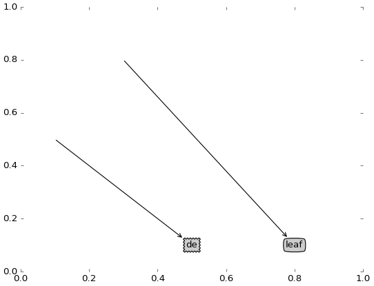
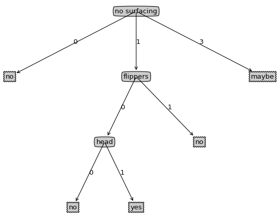

annotate 画箭头例子
1 | # -*- coding:utf-8 -*- |
效果：
annotate 画决策树
1 | # -*- coding:utf-8 -*- |
效果：
ax.annotate方法的xy（箭头起始位置）和xytext（箭头结束位置）一样时，箭头会消失，只画方格里的内容，用此原理画根节点。
以上代码最麻烦的就是如何画每个节点的x坐标。
我最开始的计划是每个节点的子节点以当前节点左右分开，因此使用当前节点的x坐标通过子节点的下标加减得到子节点的x坐标。但是效果不太好，而且仔细思考有很多的问题，比如说当前层的其他节点的子节点可能会和当前节点的子节点重合到一起等等一堆的问题。
我后来苦思冥想啊，上厕所时终于想到一个极好的办法。简单描述就是：用叶子节点推断当前节点的x坐标的方法。由下往上推导的方法。
具体：
（1）所有叶子节点在x轴均匀分布，因此算出两个叶子节点的x轴距离x_off。
（2）假设当前节点有四个叶子节点，然后当前节点的x坐标肯定在这四个叶子节点的中间啊，因此可以算出当前节点在四个叶子节点的x坐标是(this_leafnum - 1) * x_off / 2
（3）这时我们只需知道当前节点的四个叶子节点的最左边叶子节点的x轴刻度，然后加上步骤（2）的结果就可以得到当前节点的x轴的刻度。这时我们只需知道我们已经画了多少个叶子节点（因为我们是从左往右画的），已经画的叶子节点数乘以x_off就得到四个叶子节点最左边叶子节点的x轴刻度。
因此代码had_draw_leafnode * x_off + (this_leafnum - 1) * x_off / 2得到x轴坐标。